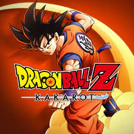
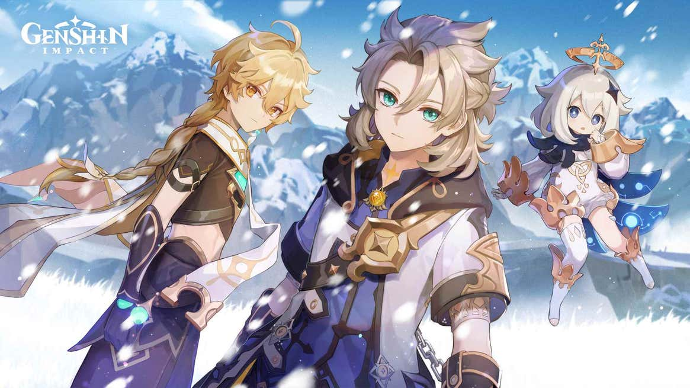

Summary
Demon Slayer Hinokami Chronicles is a 3D action fighting game that also has a story mode that follows the Anime adapted Demon Slayer, in which the main character Tanjiro Kamado and his sister Nezuko Kamado go on an adventure to cure the sister from being a demon, it was released on October 13, 2021. It is also available on PlayStation 4, PlayStation 5, Xbox One, Xbox Series X and Series S, Microsoft Windows.
News
The new game Demon Slayer was released on October 13, 2021, and is already receiving a free new update that includes the characters: Rui and Akaza well-known antagonists of the main character Tanjiro Kamado, this was shown with a trailer with raw footage, of gameplay showing their moveset.

Summary
Dragon Ball Z: Kakarot is an open-world RPG game that revisits the story of Son Goku and the Z fighters which is a retelling of the much popular anime franchise known as the Dragon Ball series. Dragon Ball Z Kakarot is available for the Nintendo Switch, PS4, Xbox One, and PC
News
There is a new free update out for the rest of the available gaming platforms, that were already added to the Nintendo Switch, which includes two new playable characters: Gotenks and Vegito. There are also more missions and Difficulties added to the game. The release date for it is on September 24, 2021

Summary
Genshin Impact is an open-world action role-playing game that allows the player to control one of four interchangeable characters in a party. Switching between characters can be done quickly during combat, allowing the player to use several different combinations of skills and attacks. The game is available to play on PlayStation 4, PlayStation 5, Xbox One, Xbox Series X and Series S, Microsoft Windows, IOS, and Android
News
Geshin is releasing a new update soon, including two limited time characters ALbedo and Eula for the gamers who were unable to get them when they were first releeased.The update also adds “Shadows Amidst Snowstorms,” a major story event that takes place in the Dragonspine region. Two powerful new artifact sets are also arriving soon, making healers and geo characters more viable in the current meta.